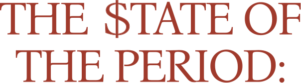

Investor x Founder
Roundtable
In response to medical gaslighting and delayed diagnoses, we bring together self-advocacy, digital health innovation, and community-driven care.
We aren't just waiting for the medical industry to catch up; we are building the platforms and networks needed to take control of our own health today.